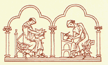
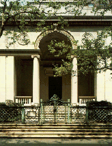
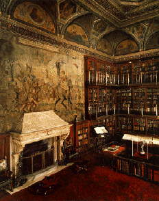

This web site was created by Fredric Woodbridge Wilson while he was Curator of the Gilbert and Sullivan Collection at the Pierpont Morgan Library. Since July 1996 it has not been an official web site of the Morgan Library, and it is maintained as a service to researchers. Although some revisions have been made to reflect changes in the collection and Library services, it is important to contact the Library directly to confirm the accuracy of information in this web site. Recent changes have been denoted by the use of square brackets.
The Gilbert and Sullivan Collection is the largest and most comprehensive collection devoted to the lives and works of the Victorian composer Sir Arthur Seymour Sullivan (1842-1900), and his collaborator, the dramatist Sir William Schwenck Gilbert (1836-1911).
The collection is intended to serve not only as an archive, a repository for preserving all genres of original material relating to Gilbert and Sullivan, but also as a center for the research and documentation of their personal and professional lives, especially of the bibliographic history of the printed editions of their works.
Unlike the other collections in the Pierpont Morgan Library, which are organized by specific genres, such as drawings, illuminated manuscripts, children's books, or music manuscripts, the Gilbert and Sullivan Collection is organized around the subjects of Victorian opera, theatre, music, and literature.
Although, in its total of some seventy-five thousand individual items, nearly every possible connection is drawn to the Gilbert and Sullivan operas, the Library's collection concentrates on the productions and performances that took place under the direct supervision of the authors.
The Gilbert and Sullivan collection is a valuable resource for conductors and stage directors, costume and scene designers, and textual scholars and bibliographers. Owing, perhaps, to a heightened general awareness of and interest in Victorian music and theatre, and in so-called "historically-informed performance," the collection is frequently consulted by writers and researchers, editors and publishers, and historians in diverse disciplines.

The Front Entrance to Pierpont Morgan's Library
The Pierpont Morgan Library in New York City is a public museum and a center for scholarly research. It originated as the private library of the American financier J. Pierpont Morgan (1837-1913).
Beginning in 1890, Mr. Morgan assembled a magnificent collection of Medieval and Renaissance manuscripts, rare printed books, fine bindings, autograph manuscripts, and master drawings, emulating the great libraries of Europe. (Other portions of his collections are now in other museums, including the Metropolitan Museum of Art, the Museum of National History, the Wadsworth Athenæum, in Hartford, Connecticut, and the Frick Collection.)
Within a decade, Mr. Morgan's holdings required a building of their own. The original library building, constructed along Madison Avenue next to Mr. Morgan's town house, was completed in 1906. Designed in the style of a Renaissance palazzo by the American architect Charles F. McKim, it is one of New York City's notable landmarks.
In 1924, Pierpont Morgan's son, J. P. Morgan, Jr., transformed the Library into a public institution. The Library's collections continue to grow within the fields established by the founder, and have as their principal focus the art, literature, and history of Western civilization from the Middle Ages to the twentieth century.
Beginning in 1968, the Library's holdings have been enhanced by the formation of an important collection of music manuscripts based on the collection of Mary Flagler Cary, donated to the Library from her estate.
The Gilbert and Sullivan Collection originated in the private collection of Reginald Allen (1905-1988) who brought his collection to the Library in 1949, and donated it gradually over the next thirty years while serving as the collection's curator. During that time, the collection continued to grow through additional donations by Mr. Allen as well as through Library purchases and gifts from other donors.
Reginald Allen, about 1950
Although, at first, the scope of the collection was limited solely to the Gilbert and Sullivan operas, for many years it has included as well the lives and all of the works of Gilbert and Sullivan in their every manifestation.
Mr. Allen retired from the Pierpont Morgan Library in 1980; Fredric Woodbridge Wilson assumed curatorial responsibility for the Gilbert and Sullivan Collection at the end of 1981.
The Library continues to acquire material for its Gilbert and Sullivan Collection. In recent years, the scope of the collection has broadened somewhat while its focus has sharpened. The collection includes manuscript and printed items relating to their closest and most important contemporaries, and hence is more generally representative of Victorian opera, theatre, music, and literature. The emphasis in acquisitions in recent years has been on early editions and original documents from the nineteenth century rather than material from more recent material.
Fredric Woodbridge Wilson, 1994
[In the summer of 1996, Mr. Wilson left the Morgan Library to become Curator of the Harvard Theatre Collection, at Harvard University's Houghton Library. Since that time the Gilbert and Sullivan Collection has been under the supervision of Mr. J. Rigbie Turner, Mary Flagler Cary Curator of Music Manuscripts and Letters.]

The East Room, the original library
Applications for admission to conduct research in the Library's Reading Room may be directed to the curator or to the Supervisor of the Reading Room.
It is essential that prospective researchers should contact the curator at least a week ahead of any visit to the Library, to arrange an appointment and to discuss personally with the curator the nature of the research and the materials required.
The Gilbert and Sullivan collection is largely uncatalogued, so it is likely that researchers will find that uncatalogued materials exist in the collection that would be useful in their research. This material is most easily identified and located through consultation with the curator.
For research that involves secondary (i.e., reference) material, researchers are ordinarily directed to other libraries and collections; the Library's collections are made available principally to qualified scholars pursuing research that requires the examination primary material (i.e., original printed or manuscript documents) in the collection.
The Library's rules require that readers unknown to the Library furnish a letter of introduction from another scholar from a recognized academic institution, attesting to the sponsor's knowledge of the character of the applicant and the experience of the applicant in working with and handling rare materials, in order to insure that the applicant is qualified to make good use of the material, that Library policies will be followed fully, and that rare material will be handled with extreme care.
The requirement for a letter of introduction may occasionally be waived in the case of the Gilbert and Sullivan Collection, in recognition of the fact that some researchers are connected with performing organizations rather than academic institutions, and that in certain cases research needs can be met without the need to handle rare material.
Reader application forms and statements of Reading Room Rules and Photographic Order policies will be sent upon request.
[List of Recent Researchers in the Gilbert and Sullivan Collection]
Researchers generally work in the Library's Reading Room near the main entrance to the Library on East Thirty-sixth Street. Because seating in the Reading Room is limited, it is advisable to arrange an appointment in advance in order to conduct research in the Library.
[Library policies now require that advance appointments be made in order to use the Reading Room.]
The Reading Room is normally open Monday through Friday from 9:30 a.m. to 4:45 p.m. The Reading Room is closed on weekends and holidays, and for several weeks during the summer, usually at the end of August.
[The Reading Room is now open Monday through Friday from 9:30 a.m. to 4:00 p.m., but collection material is not delivered after 3:30 p.m.]
Requested collection items are usually delivered within half an hour of the time they are requested. Collection material is not delivered between 1:00 and 2:00 p.m. or after 4:00 p.m. All collection material is collected at 4:30 p.m.
[All collection material in the Reading Room is now collected before the 4:00 closing.]
Typewriters and pens or indelible pencils may not be used in the Reading Room. Only pencils may be used, whether or not the reader is handling rare material.
Laptop-size computers may be used in the Reading Room, so long as they do not make noise that other readers might find disturbing. Electrical receptacles (110 v., 60 Hz. only) are available.
All coats, books, umbrellas, bags, cases, and other personal effects are to be checked in the coat room. Handbags and cameras are to be left with the Reading Room attendant. All readers' papers and personal effects are subject to examination whenever the reader leaves the Reading Room. Under no circumstances may visitors be brought into the Reading Room.
Researchers are invited to view the Library's exhibitions, for which they are not expected to pay the Library's admission fees.
Only one book or manuscript is issued at a time, unless special permission is given by the curator to compare two or more items at a time.
In the interest of preservation, whenever microfilms, facsimiles, or reproductions are available, readers will ordinarily be requested to use these instead of the original items. Occasionally, items from the collection are on public display, or are unavailable owing to conservation work or other research. Fragile or unstable material, such as brittle printed libretti, may not be available for study. To avoid possible disappointment, it is highly recommended that the list of collection items desired should be reviewed in advance with the curator.
The possession of a reader's card does not in itself convey permission to use specific items in any collection. Each request is subject to review by and the approval of the curator of the respective collection.
[Reader's cards are no longer used since registration is now maintained by computer and appointments are required.]
Under no circumstances may readers use photographic equipment or bring photographic equipment into the Reading Room. All photography must be ordered through the Library's photographic services.
The Library's curators and Reading Room staff are not able to undertake to pursue research for readers who are unable to attend to their research in person. Under certain circumstances the Library may be able to recommend professional researchers or graduate students who may be willing to perform research for a fee; however, all regulations and restrictions apply to surrogate researchers and the Library is not a party to any such arrangements.
All inquiries, whether they are made in person or by mail, telephone, or facsimile, should be directed to the curator, at the Library's address given below.
The Gilbert and Sullivan Collection includes material from many genres, which in many cases overlap those that are found in other Library collections. Researchers working in other collections may frequently find relevant material in the Gilbert and Sullivan Collection, and vice versa. Among the main genres of material in the collection are the following:
Printed Sources
Manuscripts and Documents
Production Material
Visual and Sound Material
Ephemera
The emphasis in the collection is on early, nineteenth-century materials; but in most categories, especially production material and ephemera, there are later examples as well.
[Photograph of Kate Chard in the original production of Princess Ida (120 kb)]
Among the many original documents and manuscripts in the Gilbert and Sullivan Collection are the following:
Opera Full Score Manuscripts
Opera Libretto Manuscripts
Opera Plot Books and Prompt Books
Dramatic Manuscripts
Music Manuscripts
Albums and Diaries
Proofs
In addition to the scores of operas and other major works, the Gilbert and Sullivan Collection also includes a number of manuscripts of other, lesser-known works by Arthur Sullivan:
Excerpts from Choral and Stage Works
Choral Works
Songs
Instrumental Works
The Gilbert and Sullivan Collection contains archives or selected papers of a number of the principal figures in nineteenth-century music and theatre, as well as those of some twentieth-century researchers and collectors. (In some cases the collections comprise the majority of the papers of the subject; in other cases, merely a sizeable group.) Most of these archives consist of small personal collections and specific documents; as a rule they are not maintained as discrete collections.
Principals
Researchers and Collectors
There are several other public collections that serve researchers in the field of nineteenth-century British music and theatre, including the following:
These collections are listed in approximate order of general usefulness for Gilbert and Sullivan research.
A number of Sullivan's manuscripts have remained in the archives of the respective publishers. In most cases these manuscripts were probably considered the property of the composer but were not reclaimed. In several cases the publishers have liquidated their archives by sale or disposal. In some cases, manuscript material, especially orchestral parts, are included in hire libraries.
While private collections are not generally available for research purposes, some private collectors who own rare material or original documents are willing to answer queries or make material from their collections available for the purposes of research. The following private collections are known to include important material:
United States
England
Wales
The principal manuscripts of Arthur Sullivan are dispersed among a number of collections, unlike those of W. S. Gilbert, most of which are in the British Library. Although not all of Sullivan's original manuscripts are accounted for, the following list gives the locations of manuscripts of many of his principal works:
Gilbert and Sullivan Operas
Other Operas
Stage Works
Orchestral Works
Choral Works
There are many Gilbert and Sullivan societies, and several of them produce newsletters or journals that may occasionally be useful to researchers:
Since these are all amateur societies run by volunteers, officers and addresses tend to change frequently.
Many members of the Gilbert and Sullivan community participate in computerized activities related to the Gilbert and Sullivan operas:
SavoyNet, an international bulletin board, or mailing list, was established on the Internet in 1993. It now includes several hundred subscribers, and the messages exchanged among them may number several dozen in a day.
To subscribe to SavoyNet, send a message (with a blank subject line) addressed to:
containing the message
(To cancel a subscription, substitute the word unsubscribe for subscribe.)
Any subscriber can post a message to all of the members of the list at the same time by sending an electronic mail message to the mailing list's address:
The Gilbert and Sullivan Archive is a reference library of texts, images, and music files related to the Gilbert and Sullivan operas. This archive, which was inaugurated in 1993, can be reached on the World Wide Web by specifying the address:
Web site and archive maintained by Fredric Woodbridge Wilson, containing program notes and other writing, a repository of documents, editions, images, lists, and bibliographies. The archive, which was inaugurated in 1994, can be reached on the World Wide Web by specifying the address:
Many organizations and individuals - including opera companies, publishers, and scholarly projects - have established "home pages" on the World Wide Web. These sites are too numerous and too volatile to list; however, many of these can be located by searching for the words "gilbert" and "sullivan" on Web search sites. Two well-known search sites are:
Several major exhibitions at the Pierpont Morgan Library have been drawn from the Gilbert and Sullivan Collection:
In addition, a number of smaller Gilbert and Sullivan exhibitions have been mounted, and material from the collection has been used in many other exhibitions at the Morgan Library and elsewhere.
A small representative selection of items from the Gilbert and Sullivan Collection is generally kept on display in the Library's East Room.
[In recent years Gilbert and Sullivan material is only occasionally on display.]
The Morgan Library has published several catalogues and checklists pertaining to the Gilbert and Sullivan Collection:
The Library's periodic records of acquisitions, the Reports to the Fellows (21 volumes, covering the years 1950-1986), contain information about some of the collection's important acquisitions during that period. In particular, the 1950 volume (1st report, pages 43-48) contains a notice of the origin of the collection, and the 1963-64 volume (13th report, pages 66-72) describes the acquisition of the Arthur Sullivan papers. (Both out of print.)
An overview of the collection, with descriptions and illustrations of some highlights, is contained in the Library publication, In August Company, The Collections of The Pierpont Morgan Library (Morgan Library, 1993).
Many items related to W. S. Gilbert are listed in W. S. Gilbert, An Anniversary Survey and Exhibition Checklist, by Reginald Allen (The Bibliographic Society of the University of Virginia, Charlottesville, 1963). This checklist was reprinted in Theatre Notebook. (Out of print.)
[Illustrated List of Gilbert and Sullivan Publications]
There are always several postcards, greeting cards, posters, or other souvenir items related to the Gilbert and Sullivan Collection available in the Library's book shop. The following items are currently available:
[A postcard of one side of the Royal Worcester porcelain Patience "Aesthetic Teapot" was produced recently, as well as two sets of four coasters, each with a reproduction of a different nineteenth-century D'Oyly Carte Opera poster.]
[Illustrated List of Gilbert and Sullivan Publications]
Where sufficient reason exists, copies of materials in the collection may be furnished for purposes of research or reproduction. The criteria for supplying reproductions from the collection are similar to those required for access to the materials in the Library's reading room.
Reproductions requested by mail can be supplied only after the Library receives a signed statement similar to that required of researchers who consult the collections in person.
In general, reproduction will not be permitted whenever the process of reproduction can be harmful in any degree to the original material. Furthermore, there are practical considerations that may limit large requests.
All orders must be prepaid before photographic work will be started. Orders are generally filled in the order in which prepayment is received. It should be understood that there are generally backlogs in fulfilling photographic orders.
Photocopies of collection items are only made by the curatorial or reading room staff, and photographs of collection items are only made by the Library photographer. All requests for reproductions or permissions must be approved by the curator. Photocopies of rare, original, or unpublished material must be approved by the curator. Publication is never authorized from photocopies, microfilm, or 35 mm. slides.
Current rates for the most common photographic services are listed below. In addition to the rates listed, there are surcharges for handling difficult material, for rush orders, and for shipping. Additional fees are charged for reproduction. A current price list for photographic services is available upon request from the Photographic Services Office.
Where several prices are listed, the first applies to individual scholars, the second to not-for-profit organizations, and the third to other parties, including commercial publishers.
[This fee schedule is out of date.]
The provision of photographic reproductions does not in itself convey permission to quote from, publish, reproduce, or perform the material in question. Separate, specific permission must be sought in advance, and additional fees or other considerations may be stipulated.
Reproductions are not transferable to other parties except by permission, and all obligations on the party receiving reproductions are binding on subsequent owners of the materials.
In granting permissions, the Library acts as the owner of the physical material and not (in most cases) as owner of the copyright. The party requesting permission to quote or reproduce materials in the Library's collections are responsible for complying with any copyright restrictions.
Morgan Library exhibitions are normally open to the public Tuesdays through Fridays from 10:30 a.m. to 5:00 p.m., on Saturdays from 10:30 a.m. to 6:00 p.m., and on Sundays from 1:00 p.m. to 6:00 p.m. The Library is closed to the public on Mondays and major holidays.
Usually, several special (temporary) exhibitions are open to the public, although there are periods between exhibitions when some galleries may be closed. Normally at least one exhibition room is devoted to selections from the various permanent collections.
There is a suggested admission charge of $5.00 for adults and $3.00 for students (with valid identification) and for senior citizens.
A schedule of exhibitions and special events is available from the Public Programs office.
[The Library's hours of opening have been extended, and admission charges have increased.]
The Morgan Library sponsors a number of special programs for the public:
The Library conducts series of concerts and lectures that are open to the public. Although admission to many of these events are free, tickets are always required. Requests for tickets are filled in the order in which they are received, with preference given to Friends of the Library.
Guided tours of the Library buildings and the current exhibitions are regularly scheduled and available to the public.
Recorded illustrated lectures about the current exhibitions are shown several times daily.
Groups are welcome to visit the Library, and special tours or programs can be arranged, but it is necessary to make arrangements in advance. School groups must be well chaperoned.
A schedule of exhibitions and public events is available from the Public Programs office. Recorded information about current exhibitions and special programs can be heard by telephoning 212-685-0610.
The Gilbert and Sullivan Collection continues to acquire material, and the Library welcomes and encourages donations of appropriate material to the Gilbert and Sullivan Collection.
All donations are acknowledged, and the Library can provide appropriate forms for tax purposes.
The criteria for donations are similar to those that govern Library acquisitions by purchase: in general, the Library accepts as gifts material of quality and relevance similar to the material it purchases for its collections. This does not mean that small gifts are not welcome, however. In the past, gifts to the Gilbert and Sullivan Collection have ranged from single programs or letters to major manuscripts and entire archives and collections.
Although the curatorial staff may be able to furnish general advice concerning values, federal government regulations prohibit the Library from supplying or obtaining valuations of materials donated to its collections.
The Friends of the Morgan Library help to support the Library's programs and collections.
Members receive Library newletters, invitations to special receptions, and notices of many of the Library's programs, such as concerts, lectures, and tours. Friends of the Library receive the annual book shop gift catalogue, and receive a discount on most purchases from the book shop, whether they are made in person or by mail or telephone.
There are several levels of membership, beginning at $50 per year for an individual membership. Further information is available at the information desk in the Library's entrance hall or by request. Address inquiries to the Membership Office.
The Library is especially appreciative when scholars and researchers who benefit from the Library's collections and services are able in turn to help to support the Library's programs.
The Morgan Library is located in the Murray Hill section of midtown Manhattan. The Library buildings cover about half of the city block on the east side of Madison Avenue, from East 36th to East 37th Street.
The Library is a twenty-minute walk from Pennsylvania Station (Amtrak, New Jersey Transit, and Long Island Railroad), a twenty-five-minute walk from the Port Authority Bus Terminal, and a ten-minute walk from Grand Central Terminal. The nearest Port Authority Trans-Hudson (PATH) train station is located at Sixth Avenue at 33rd Street, a ten-minute walk from the Library.
The least expensive and most convenient access to Kennedy, LaGuardia, and Newark airports is by airport shuttle bus. The East Side Airport Bus Terminal at Park Avenue and East 42nd Street is a five- to ten-minute walk from the Library.
The nearest subway stops are at the 33rd Street and Grand Central stations on the Lexington Avenue lines. Crosstown buses run along 34th and 42nd Streets, uptown buses run along Madison Avenue, and downtown buses run along Fifth Avenue.
The Library has no parking facilities. Garage parking is available on East 36th and East 37th Streets. (Some local garages close early in the evening.) It is unlikely that street parking will be found nearby, especially on weekdays.
There are many restaurants and shops in the vicinity of the Library, in every price range, but some restaurants are closed on weekends and evenings.
Information concerning local hotels and restaurants is available from the Reading Room, the information desk, the Public Information office, or from the curator.
The Morgan Library publications, including catalogues, postcards, and greeting cards, are available in the Library's book shop. The shop is open whenever the exhibitions are open to the public. Credit cards are accepted.
Orders for Library publications may also be placed by mail or telephone. Address inquiries to the Mail Order Department. Telephone orders are taken Mondays through Fridays from 9:00 a.m. to 5:00 p.m. Telephone orders may be placed on a toll-free number, 800-861-0001.
The Morgan Library's Garden Court affords a tranquil place to relax. The Garden Court Café serves light luncheon and afternoon tea. The Café is open from 11:00 a.m. to 4:00 p.m. from Tuesday through Friday, from 11:00 a.m. to 5:00 p.m. on Saturdays, and from 12:00 noon to 5:00 p.m. on Sundays.
The Reading Room and most public areas of the Library are easily accessible to the disabled. The Library has one wheelchair, which is available to the public and may be reserved in advance.
29 East Thirty-sixth
Street
New York City 10016-3490
Switchboard: 212-685-0008
Reading Room: 212-590-0315
Facsimile: 212-685-4740
Reading Room E-mail: readingroom@morganlibrary.org
[The Library now has a web site, www.morganlibrary.org.]
This document was
revised on July 30, 1996.
Minor revisions have been made occasionally; an update was made
on July 27, 2001.
This unofficial document is furnished as a convenience to researchers.
It is not maintained by the Morgan Library. The accuracy of all
information should be confirmed independently.
The address of this document is http:morgan-library/gs-collection.html.
{kind=link}